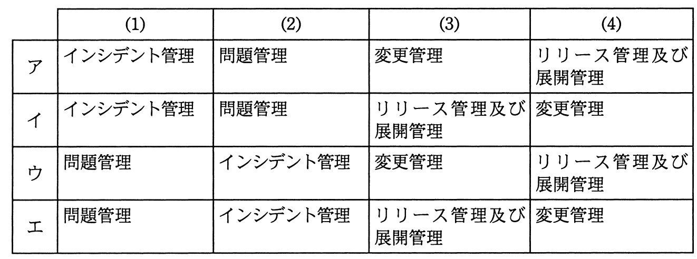

（1）〜（4）はある障害の発生から本格的な対応までの一連の活動である。（1）〜（4）の各活動とそれに対応するITILv3の管理プロセスの組合せのうち，適切なものはどれか。
（1）利用者からサービスデスクに“特定の入力操作が拒否される”という連絡があったので，別の入力操作による回避方法を利用者に伝えた。
（2）原因を開発チームで追究した結果，アプリケーションプログラムに不具合があることが分かった。
（3）原因となったアプリケーションプログラムの不具合を改修する必要があるのかどうか，改修した場合に不具合箇所以外に影響が出る心配はないかどうかについて，関係者を集めて確認し，改修することを決定した。
（4）改修したアプリケーションプログラムの稼働環境への適用については，利用者への周知，適用手順及び失敗時の切戻し手順の確認など，十分に事前準備を行った。
